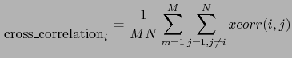

Next: Overall Channels Weighting Factor Up: Meeting Information Extraction Previous: Meeting Information Extraction Contents
In a typical implementation of a time-delay based beamforming system one needs to select one of the channels as the reference channel. This channel is compared to all others and the time delay of arrival (TDOA) is estimated for each pair. It is important for this channel to be the best representative of the acoustics in the meeting, as the correct estimation of the delays of each of the channels depends on the chosen reference.
In the meetings transcribed by NIST to be used for the Rich Transcription evaluations (NIST Rich Transcription evaluations, website: http://www.nist.gov/speech/tests/rt, 2006) there is one microphone indicated to be the most centrally located in the room. Such microphone is chosen empirically given the room layout and the prior knowledge of the microphone types. This module overpasses that decision and selects one microphone automatically given a criterion based on acoustics. This is intended for system robustness in cases where absolutely no information on the room layout and the microphone placements is available. Two possible acoustic criterions were investigated to select such channel:
|  | (5.7) |
where  is the number of channels and
is the number of channels and  indicates
the number of blocks used in the average. In the implementation
GCC-PHAT cross-correlation was used as described below.
indicates
the number of blocks used in the average. In the implementation
GCC-PHAT cross-correlation was used as described below.
The channel with the highest average cross-correlation was chosen as reference channel. By using this metric it takes into account the amount of time each speaker speaks in total and the quality of each microphone. In the case where all microphones were the same and all speakers spoke the same amount of time, the chosen microphone should be the most physically centrally located one, coinciding with what NIST reports in the RT evaluations.
user 2008-12-08